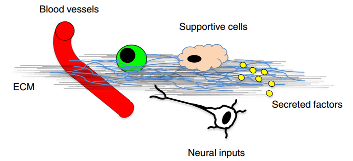

Cellular senescence is the permenant cell cycle arrest to response to various cell stress. The accumulation of senescence is considered to contribute to the process of aging disease, including chronic lung aging disease. NIH launches program to map a rare type of non-dividing cells implicated in human health and disease. This is a consortium collaboration project and funded by NIH, leaded by Prof. Toren Finkel, Prof. Melanie Koenigshoff, Prof Ana Mora and Prof. Irfan Lucia Rahman from three states of USA. The consortium will identify biomarkers of senescent cells in human heart and lung and then construct high-resolution, detailed maps of cellular senescence across the lifespan and physiological states. Our analysis will involve in situ mapping using established targeted assays, as well as high-content unbiased approaches involving single cell RNA/ATAC sequencing, proteomics, and spatial transcriptomics. In addition, as part of our mapping endeavor, the TriState SenNet TMC will analyze the relationship between the initiating trigger for senescence and the subsequent biology and phenotype of the senescent cell.
This was the doctoral research for doctoral degree.
This was the graduate research for my Master's degree.
In this project, I developed a method, which was proved to be of feasibility and reliability, to quantitatively high-throughput dissect the cellular microenvironment in microfluidic culture systems. This method was based on LC-MS/MS and microfluidics technology. By miniaturization of the culture system within a microfluidic chip, it could have a different balance between endogenous factors (secreted by the cells) and exogenous factors (provided by the culture medium). Using this method, I explored the cellular microenvironment of human induced pluripotent stem cells (hiPSCs) from different aspects, including the soluble secreted proteins and composition of extracellular matrix (ECM), identifying about 600 proteins with 66.2% being extracellular proteins. I further dissecting the cellular microenvironment during cell reprogramming. The structure of the ECM showed different remodeling during cell reprogramming within microfluidics and normal well system. Considering the huge disparity of reprogramming efficiency between these two systems, we concluded that ECM is likely affecting cell reprogramming efficiency, while cell reprogramming process under different environment could also remodel the ECM.
created with
Website Builder .